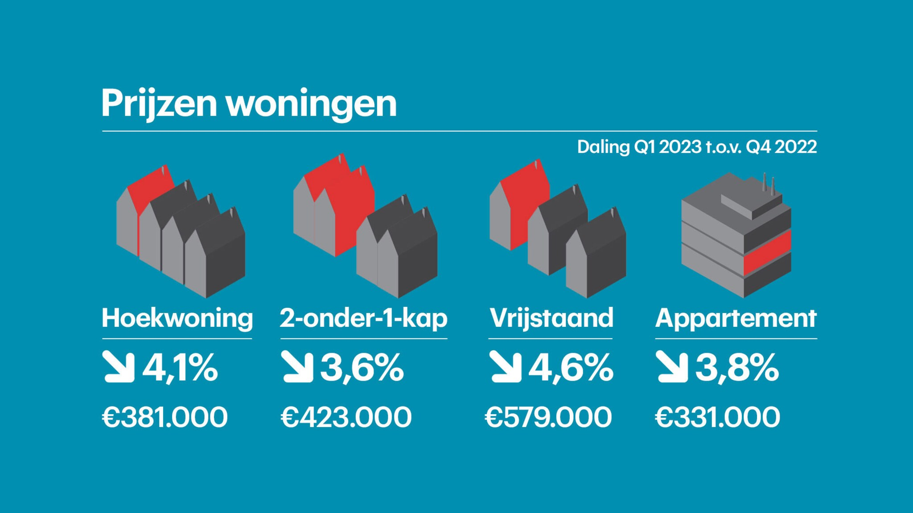
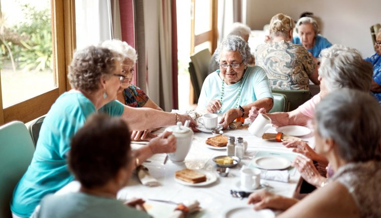
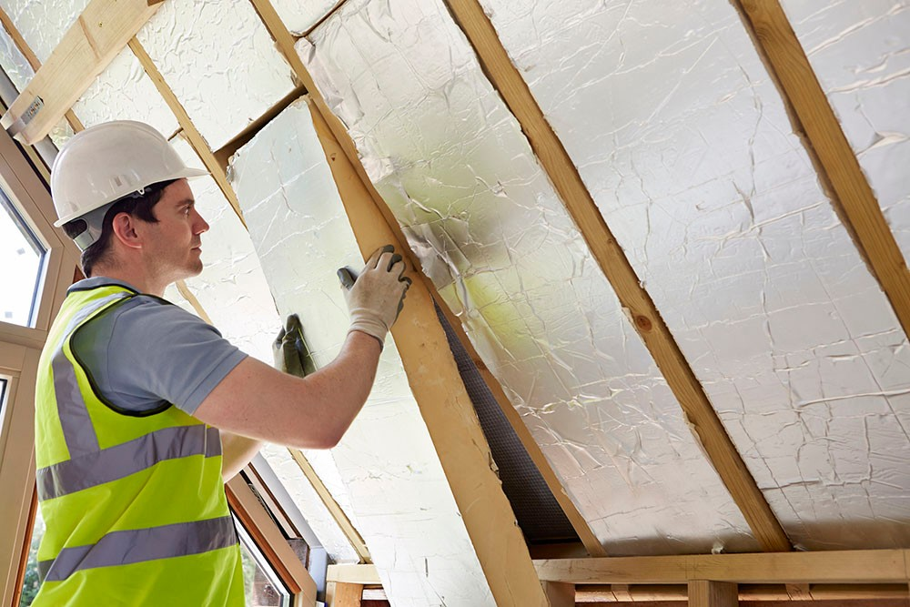
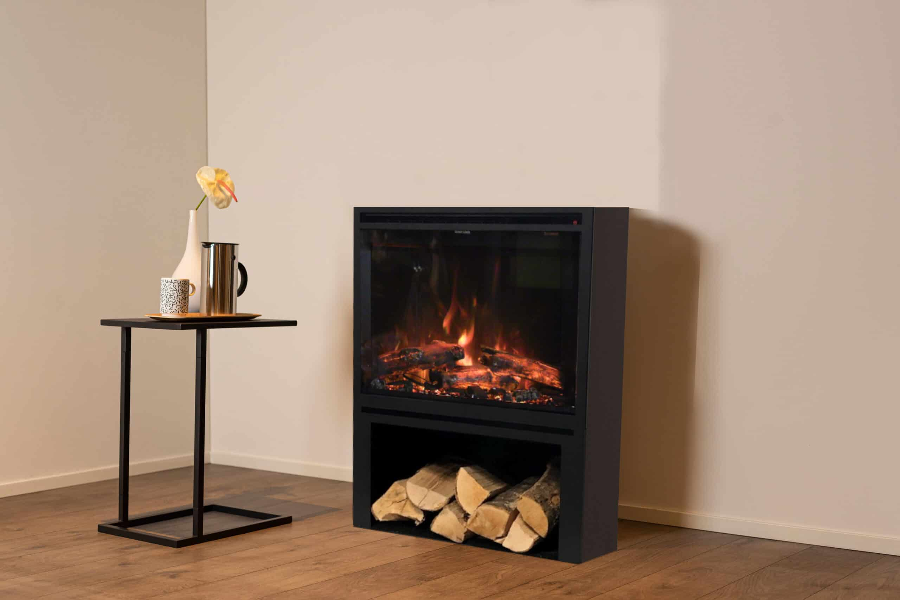
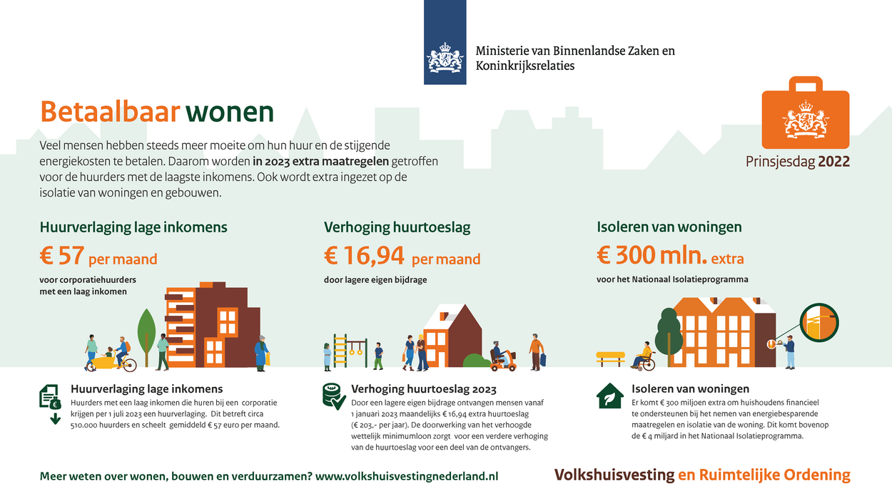

Wonen
De huizen prijzen moeten omlaag gaan
Zodat laag inkomen gezinnen, jonge mensen of alleenstaande een kans krijgen om een huis te kopen.Als het huis dus minder kost kunnen laag inkomen gezinnen meer geld uitgeven voor eten en kleding. En kunnen mensen die voor een huis ergens anders moeten wonen makkelijker verhuizen van huis.
Ouderentehuis moeten ruimtelijker worden
Zodat het aantrekkelijker is om sneller er naar toe te gaan. Want als het er veel gezelliger uitziet en is dan willen ouderen op een jongere leeftijd dan 70 daar heen gaan want thuis zitten ze meestal alleen of met ze 2en.
Meer huizen gaan isoleren
Zodat je geen warmte verliest in je huis en dus minder energie verliest aan kachel en dus minder hoeft te betalen voor de energierekeningen. Je bent ook nog eens goed bezig met duurzaam zijn door te isoleren. Ook een optie is een groendak nemen dit is goede isolatie en je bent ook nog eens goed bezig met het milieu te helpen. Een groendak absorbeert water en is eenvoudig aan te leggen.
Meer huizen gaan over op elektrische kachels.
Zodat je duurzamer bezig bent en er tegelijkertijd winst aan maakt. Je maakt er winst aan omdat gas duurder is dan de elektriciteit die je nodig hebt voor de kachel.
De huurtoeslag verhogen
Zodat mensen met een laag inkomen alsnog een leuke dag met hun kinderen kunnen hebben en dus niet de risico lopen om in armoede te komen door het niet kunnen betalen van huur.Als het huis in een goede buurt zit hebben de kinderen ook meteen goede scholen om naar toe te gaan.
